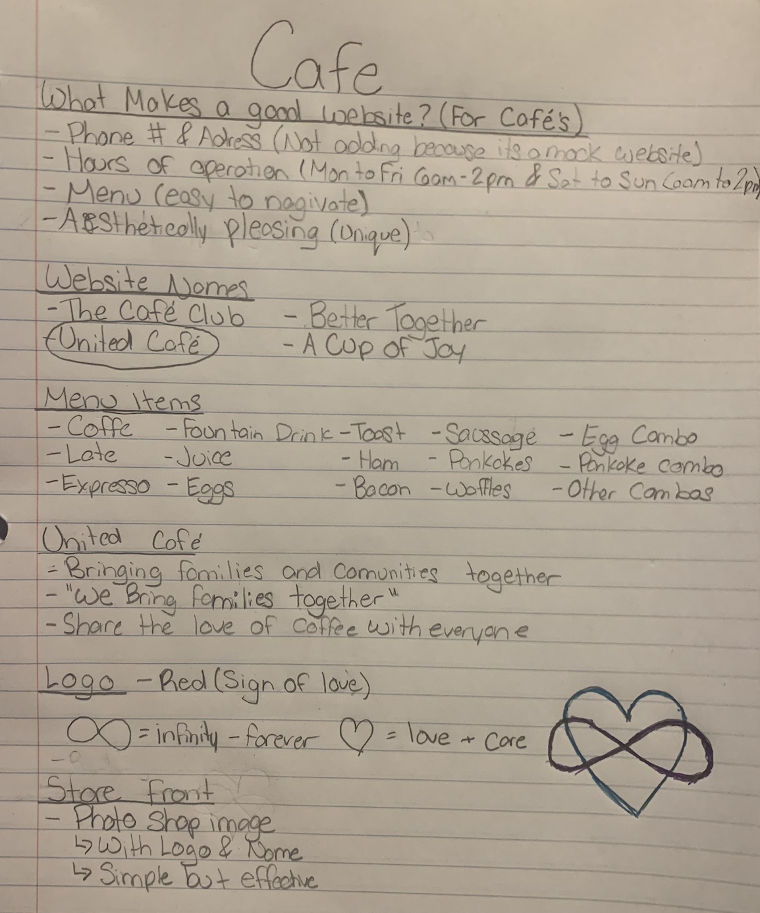

Bringing families together since 2016
I was tasked with an assignment to create, design, and deliver a website for a made up website. For the assignment we did research on what made a good website and what made a good cafe. With this information we then had to create a website that is user friendly and easy to navigate.

After some research I found somethings that I wanted to add into my website. Some factors that make a cafe website better. Some websites I have came across have not had hours of operations or a very difficult to navigate menu. When I was planing it out I wanted to ensure that things were easy to navigate and easy to find.
Over the course of this project I made a few different sketches and notes about what my plans were. I had different notes for the logo, menu ideas, and things I definitely wanted to add. Unfortunately this was the only sketch I was able to find from my research.
United Café was created for the entire family which means it has to be designed for the entire family. From those who have perfect health to those who are older and anyone who has any disabilities, we want to make sure there is room for all. Many older customers or people with visual impartments may have troubles reading a menu so we want to ensure that the menu is designed with care. On top of the visual design, we want to make sure that the restaurant would also be accessible. This includes dietary meal options along with accessible washrooms and tables that have room for wheelchairs. Designing for the whole family is what will help bring everyone together.
Designing is an important part of a business, if it doesn’t work for one person in the family, they will be unable to go there. Rather than focusing on the typical person we have to expect the unexpected. This is why I mentioned the older generations and the people that may have disabilities. Making things inclusive will bring more people into the café because designing for a family brings families closer.
References
- Ghiselli, Richard F., et al. “Foodservice Design: Assessing the Importance of
Physical Features to Older Consumers.” Journal of Foodservice Business Research,
vol. 17, no. 4, 2014, pp. 323–335., doi:10.1080/15378020.2014.945890.